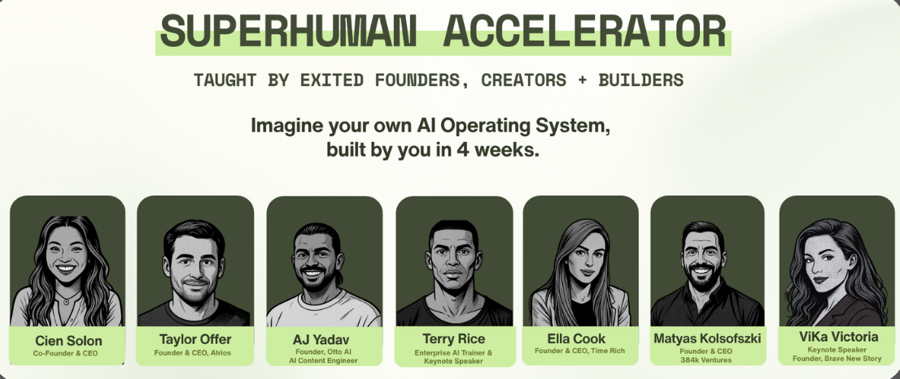

Giveaway
Win 2 seats to the Superhuman Accelerator.
Go in the draw to win 2 seats. A 4-week live intensive to build your AI operating system with exited founders. Starts Monday 26 October.
To enter
- Connect with Ella on LinkedIn
- Write a LinkedIn recommendation about the workshop

Time Rich Content OS
Post every week without writing from a blank page.
Everything from the workshop in one place: the AI Head of Content that runs your posting, the LinkedIn skills, the Business COMPASS and the prompts that make AI ask before it guesses. Set it up once. Use it every week.
Time Rich is an AI education platform and founder community, run by Ella Molony Cook: four companies, one exit, early investor in Anthropic. We run live workshops in New York and online where you build alongside us, not watch slides.
Get every new skill the day it ships.
The skills on this page are free. New ones land after every workshop, and subscribers get them first. Join founders, operators and investors on the Time Rich Substack.
Stanley is an AI Head of Content you text. It plans, drafts, repurposes and schedules, and it already knows how to do the job. Works by SMS, WhatsApp or web. It is what Ella uses every day.
- Sign up with the button below. It takes two minutes.
- Tell it who you are. Paste in your Business COMPASS, or your offer, your audience and three posts you are proud of. The more it knows, the less you edit.
- Connect your notetaker. Your best ideas are already said out loud on calls. Connect Granola and Stanley turns your meetings into post drafts. Granola does not record video or join your calls. Extended free trial with this link.
- Switch on the rituals Ella runs:
- Good morning, every morning: today’s plan and what to post
- Repurpose, every morning: yesterday’s post adapted for each platform
- Substack notes, late morning: short notes drafted from your ideas
- Calls to posts, every evening: today’s meetings turned into drafts
- Weekly review, Sunday morning: what worked, what to post next week
Rather build it yourself? Start with the COMPASS, keep your context in one Claude Project and add the skills below.
Stanley is a Time Rich partner. This is a referral link.
The Business COMPASS tells every agent what your business is: what you sell, who you sell to, how you sound and what you never say. If a fact is not in it, the agent asks instead of guessing. Fill it in once and every output gets sharper.
- Grab it from the post and duplicate it
- Fill in your offer, audience, voice and proof
- Paste it into Stanley or your Claude Project
Each skill teaches AI one job and does it well.
- Plan: audit your profile against the client you want, build an idea bank, map the month
- Write: hooks that stop the scroll, posts in your voice, carousels, CTAs that get comments
- Polish: strip out the lines that sound like a machine
- Repurpose and engage: turn one post into many, and get your team posting too
- Tell stories: find the stories you already tell, and keep them on file
- Download the ZIP. Do not unzip it.
- Upload it in Claude: Customize → Skills → Add → Upload a skill.
- Turn on code execution: Settings → Capabilities.
- Open a new chat and paste the prompt from the skill’s card.
The master prompt
Add it to every prompt. AI asks before it guesses, rates its own work and tells you where your thinking is weak.
Before you start: Restate my goal in one line, and tell me if it’s the right goal. Don’t assume. If you need more context, ask me up to 3 questions first. When you finish: Rate your work out of 10. Say what would make it a 10, then fix it. Push back on me: where is my thinking weak, what could go wrong, what am I missing? Tell me the one thing to do next. Tell me what you learned about me or my work that should be saved to my Context page, so you’re smarter next time.
One-paragraph version for text shortcuts
Before you start: restate my goal in one line and tell me if it's the right goal. Don't assume; if you need more context, ask me up to 3 questions first. When you finish: rate your work out of 10, say what would make it a 10, then fix it. Push back on me: where is my thinking weak, what could go wrong, what am I missing? Tell me the one thing to do next, and what you learned about me that should be saved to my Context page.
Recurring work audit
Run it monthly. It finds what to turn into a skill, what to schedule and what to stop doing.
You are my Chief of Staff. Audit everything I do on a repeating basis and tell me what to turn into a skill, what to turn into a scheduled task, and what to stop doing. Look back over the last 60 days in: Gmail (sent mail and templates), Google Calendar, Slack, Notion, Granola meeting notes and Google Drive. Count something as recurring if it happened 3 or more times, or happens on a fixed rhythm (daily, weekly, monthly, per client or per event). Before you start: Restate my goal in one line, and tell me if it’s the right goal. Don’t assume. If you need more context, ask me up to 3 questions first. When you finish: Rate your work out of 10. Say what would make it a 10, then fix it. Push back on me: where is my thinking weak, what could go wrong, what am I missing? Tell me the one thing to do next. Tell me what you learned about me or my work that should be saved to my Context page, so you’re smarter next time. Sort every item by department: Sales: outreach, follow-ups, proposals, CRM updates, pitches Marketing and Content: newsletter, LinkedIn, Instagram, repurposing, event promo Operations: admin, scheduling, invoicing, onboarding, team handoffs Programs: delivery, workshops, client work Use these definitions: Skill: a repeatable task I trigger on demand that needs my context, voice or judgement. Example: writing a follow-up email after a sales call. Scheduled task: something that runs on its own at a set time and doesn’t need me to start it. Example: a Monday 8am pipeline brief. Both: a skill that a scheduled task runs on a timer. Cut: work that doesn’t move my top goals forward. For each item, give me one table row with these columns: Department | Task | How often | Hours per month (estimate) | Evidence (link to email, thread or doc) | Skill, Scheduled task, Both or Cut | Why, in one line | Trigger or schedule Then give me: The top 5 items ranked by hours saved per month. For the number one item, a draft skill description (name, when it triggers, inputs, output) or a scheduled task spec (name, cadence, time, what it delivers and where). Any email I send repeatedly that should become a template. Quote the first line of each. Rules: Evidence only. If you can’t link to it, leave it out. Don’t create, send or schedule anything. This is an audit. Keep the whole thing to one page. Put the table first and skip the intro. If a source isn’t connected, say which one in a single line and carry on with the rest.
Save it once
Set a text shortcut so typing ;mp pastes the master prompt. Text shortcuts handle line breaks badly, so use the one-paragraph version above.
- Mac: System Settings → Keyboard → Text Replacements → +. Replace:
;mp. With: the paragraph. Click Add. - iPhone: Settings → General → Keyboard → Text Replacement → +. Phrase: the paragraph. Shortcut:
;mp. Save. If you set it up on your Mac first, iCloud syncs it. - Test it: open Notes, type
;mpand press space.
The Content OS tracks every piece from idea to posted. Your AI reads it and writes back to it, so nothing lives only in your head.
- Open the template
- Duplicate it into your workspace
- Connect Notion to your AI
Workshops
Every Time Rich workshop is hands on: laptops open, you leave with something working. New skills from each one land on this page, so bookmark it.
Superhuman Accelerator
Get one part of your business running on AI in four weeks. You build your Sales, Ops and Content projects, all reading from your COMPASS, and leave able to build the next agent yourself. Live build sessions, screen share, no slides. Starts Monday 26 October. Every ticket includes two seats.
Substack subscribers save with code SUBSTACK.